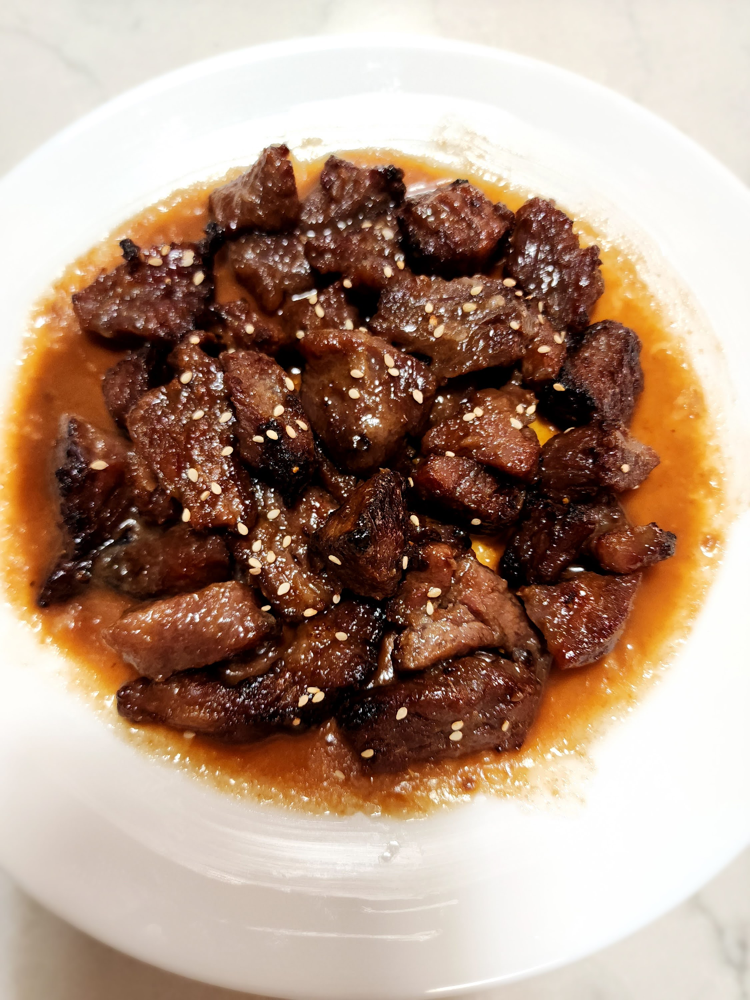

LA Galbi (Korean Beef Short Ribs)

Ingredients
- 1 kg LA galbi ribs
- 1 small shallot, diced
- 6 cloves garlic, chopped
- 2" knob of ginger, peeled and chopped
- 140 g Asian pear, peeled and chopped
- 240 ml soy sauce or coconut aminos
- 120 ml Mirin
- 30 ml rice vinegar
- 30 ml sesame oil
- 30 ml honey
- 25 g brown sugar
- 4 g black pepper
- 5 g toasted sesame seeds
- 2 green onion, finely chopped
Directions
- Prep Ribs: Rinse ribs in cold water with a little baking soda, then pat dry.
- Make Marinade: Add shallot, garlic, ginger, and pear to an immersion blender cup. Add soy sauce, mirin, rice vinegar, sesame oil, sugar, and honey; blend until smooth.
- Marinate: Place ribs in an airtight container, pour marinade over top, seal, and refrigerate at least 1 hour (up to 24 hours).
- Air Fry: Arrange ribs in a single layer in the air-fryer tray. Cook at 350°F for 7 minutes per side, adding extra marinade halfway through.
- Serve: Transfer ribs to a platter, spoon the remaining cooking marinade over top, and garnish with chopped green onions and sesame seeds.
Chef's Notes
- Coconut aminos is a less salty soy-free alternative to soy sauce
- Apple or Bosc pear works well in place of Asian pear.
- The recipe halves easily for smaller batches.
- A regular blender works fine if making a larger quantity.
- Extra marinade can be stored in an airtight container in the refrigerator for future use.
- Don't overcrowd the air fryer - cook ribs in batches if needed and keep finished ribs warm in a low oven.
Michael Fritsche
mbf@fritsche.org